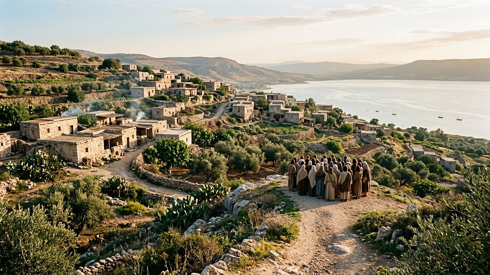
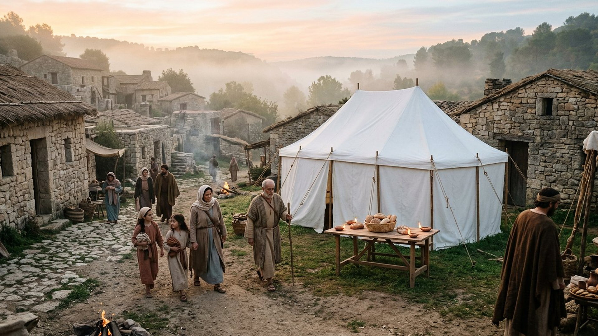

Salle 40 — Daniel 2 ; Matthieu 6 À VENIR
Le Royaume de Dieu : « que ton royaume vienne »
« Dans le temps de ces rois, le Dieu du ciel suscitera un royaume qui ne sera jamais détruit. » — Daniel 2:44 (d’après Segond 1910)
Reconstitution numérique — la Pierre devenue montagne (Daniel 2:35) : le fil rouge de tout le musée.
La salle qui donne son sens à toutes les autres
Chaque salle du musée gravitait autour de ce mot : le Royaume de Dieu. C’est la Pierre du rêve de Nebucadnetsar, détachée sans main d’homme, qui frappe la statue des empires et devient « une grande montagne » remplissant toute la terre (Daniel 2:34-35, salle 07). C’est aussi la demande que Jésus place au cœur de sa prière modèle : « Que ton royaume vienne ; que ta volonté soit faite sur la terre comme au ciel » (Matthieu 6:10). Et c’est le contenu même de son message en Galilée : « il faut aussi que j’annonce aux autres villes la bonne nouvelle du royaume de Dieu, car c’est pour cela que j’ai été envoyé » (Luc 4:43).
Dans la lecture retenue par ce musée, ce Royaume est un gouvernement céleste réel, confié à Jésus comme Roi, qui remplacera les gouvernements humains à Harmaguédon (salles 37), régnera mille ans (salle 32), relèvera les morts (salle 39) et rendra l’humanité à la perfection, avant que le Fils ne remette le royaume à son Père (1 Corinthiens 15:24-28). Ses sujets, eux, vivront sur la terre : « les hommes doux hériteront la terre » (Matthieu 5:5). Aucune date d’établissement n’est avancée — le musée a déjà dit pourquoi il n’en donnera jamais (salle 13).
Le récit en cinq temps
Avancez dans l’histoire du Royaume, d’une station à l’autre.

Le banc des preuves : la prière la plus ancienne
DONNÉE HISTORIQUE
La Didache et le Codex du XIe siècle (EV-49)
La Didache — « Enseignement des douze apôtres » — transmet la prière du Seigneur avec la demande « que ton royaume vienne », dans une forme très proche de Matthieu 6. Le texte nous parvient par le Codex Hierosolymitanus, copie signée du scribe Léon en 1056 et redécouverte en 1873. La datation de la Didache elle-même (fin du Ier ou début du IIe siècle, selon les spécialistes) reste débattue : la prière pour le Royaume est en tout cas attestée dès les premières générations chrétiennes.
LECTURE PROPHÉTIQUE
Pourquoi un gouvernement céleste ?
Parce que les textes articulent trois données : le Royaume « ne sera jamais détruit » et broie les royaumes humains (Daniel 2:44) ; son Roi règne « au milieu de ses ennemis » avant de soumettre toute autorité (Psaume 110:1-2 ; 1 Corinthiens 15:24-25) ; et ses bienfaits — fin de la mort, des larmes et de la douleur — descendent sur les humains (Révélation 21:3-4). Un symbole intérieur seul ne rend pas compte de cette architecture d’ensemble, que les salles 31 à 39 déploient pièce par pièce.
DÉBATTU
Les autres lectures, honnêtement
Les traditions chrétiennes lisent le Royaume tantôt comme l’Église présente, tantôt comme le règne de Dieu dans le cœur du croyant, tantôt comme un règne futur et littéral de mille ans (salle 32), avec des variantes sur la place d’Israël et sur le « déjà / pas encore ». Le débat est ancien — Justin Martyr le signalait déjà (EV-39). Le musée retient un Royaume-gouvernement à venir et le signale comme lecture prophétique.
Quatre clés pour bien comprendre ce Royaume
1. Un gouvernement, pas une métaphore vague
Il a un roi désigné, une capitale symbolique (la nouvelle Jérusalem, salle 34), une durée d’exercice décrite (mille ans, salle 32) et des actes datés dans la séquence : il reçoit le pouvoir, juge, relève, puis remet le royaume au Père (1 Corinthiens 15:24-28).
2. Des sujets sur la terre
Le Royaume gouverne pour la terre : « les hommes doux hériteront la terre » (Matthieu 5:5) ; « les justes posséderont la terre et sur elle ils résideront pour toujours » (Psaume 37:29, adapté). Le but n’est pas de vider la terre, mais de la guérir.
3. On le demande, on ne le construit pas par les armes
La seule action prescrite aux humains à son sujet est une prière et une annonce : « que ton royaume vienne », « cette bonne nouvelle du royaume sera prêchée » (Matthieu 6:10 ; 24:14). Aucune salle du musée n’appelle à l’établir par la force — à Harmaguédon, les fidèles ne combattent pas (salle 37).
4. Aucune date, une direction
Le musée retient la séquence (salle 15) et refuse le calendrier : prier « que ton royaume vienne » depuis vingt siècles sans connaître le jour est précisément la posture que les textes décrivent — une attente active, pas un compte à rebours.
Prescience n’est pas fatalité — un royaume qu’on demande
On ne prie pas pour un destin inéluctable qui écraserait les volontés : on demande un gouvernement juste, et l’on reste libre de l’attendre ou de l’ignorer. La prescience annonce la Pierre et la montagne ; elle laisse à chacun, aujourd’hui, le choix de dire ou non la prière.

Salle 07 : la statue et la Pierre · Salle 32 : le règne de mille ans · Salle 34 : la nouvelle Jérusalem
Écouter la salle
Transcription de la narration
Bienvenue dans cette salle du musée. Vous allez découvrir une petite Pierre posée face à une immense montagne au soleil levant, un village de collines au bord d’un grand lac, puis une tente blanche dressée au milieu des maisons d’un village. Bonne visite. La visite avance en cinq étapes courtes. Prenez le temps d’observer chaque image et de lire les panneaux : ils présentent un rêve très ancien, une prière célèbre et un vieux manuscrit retrouvé au dix-neuvième siècle.